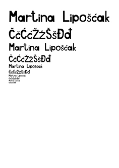
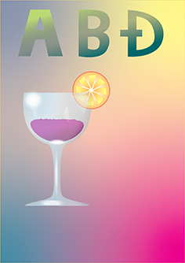
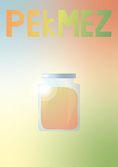
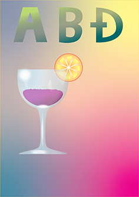
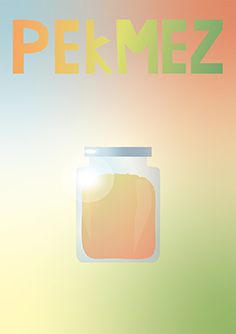
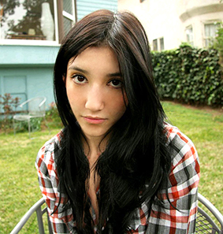
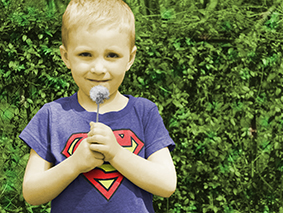
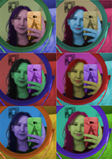
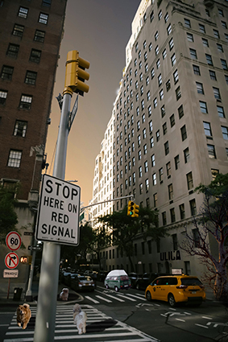
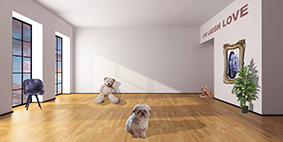

Ovdje se nalazi vježba iz FontForgea u kojoj sam izradila vlastiti font.
Ovdje se nalaze vježbe i projektni zadatak u Illustratoru. Link vodi na pdf 2. vježbe. U ovim sam vježbama koristila Pen Tool, gradijent, Rotation Tool, Fill, Stroke i mnoge druge alate pomoću kojih sam crtala po predlošcima.
Link na 2. vježbu - Bezierova krivulja
 



Ovdje se nalaze vježbe i projektni zadatak u Photoshopu. U ovim sam vježbama koristila tehnike retuširanja i koloriranja putem kanala te sam koristila Magnetic Lasso tool, Brush, Eraser i dr.
    Ovdje se nalaze vježbe u Premieru. U 8. vježbi izradila sam kinemagraf svijeće prema uputama u videu te svoj kinemagraf u formatu .gif.
U 9. vježbi izradila sam videe tako što sam spojila 2 video isječka i koristila sam razne efekte (Fade In/Out, Scale...).


10. i 11. vježbu odradila sam u Dreamweaveru u kojem sam napravila web stranicu.
Link na web